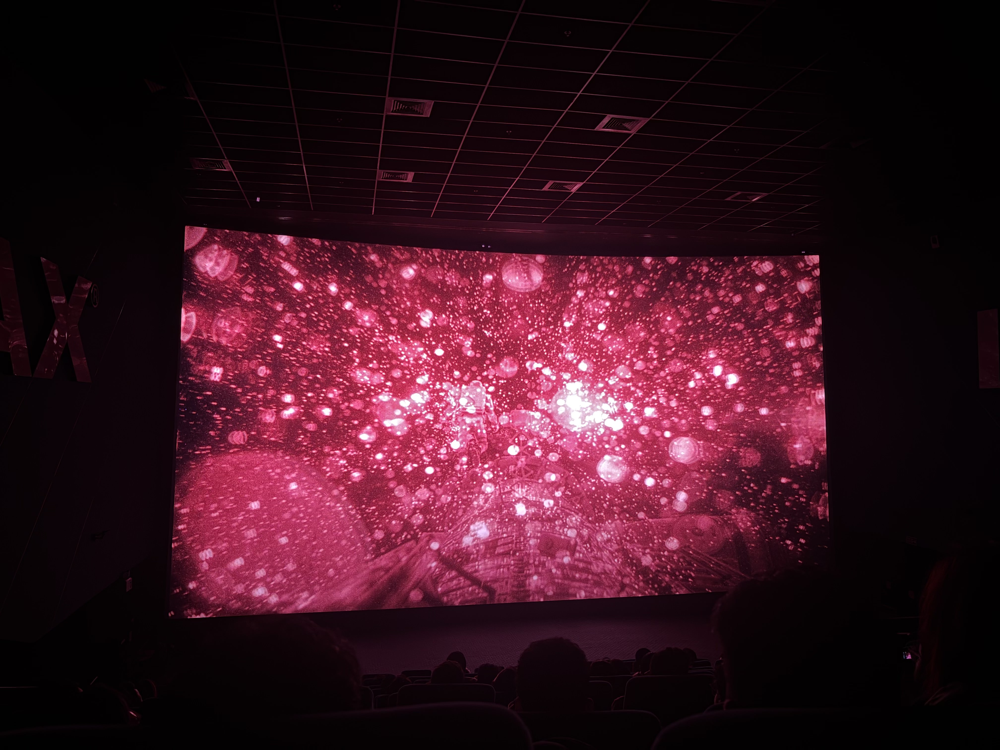
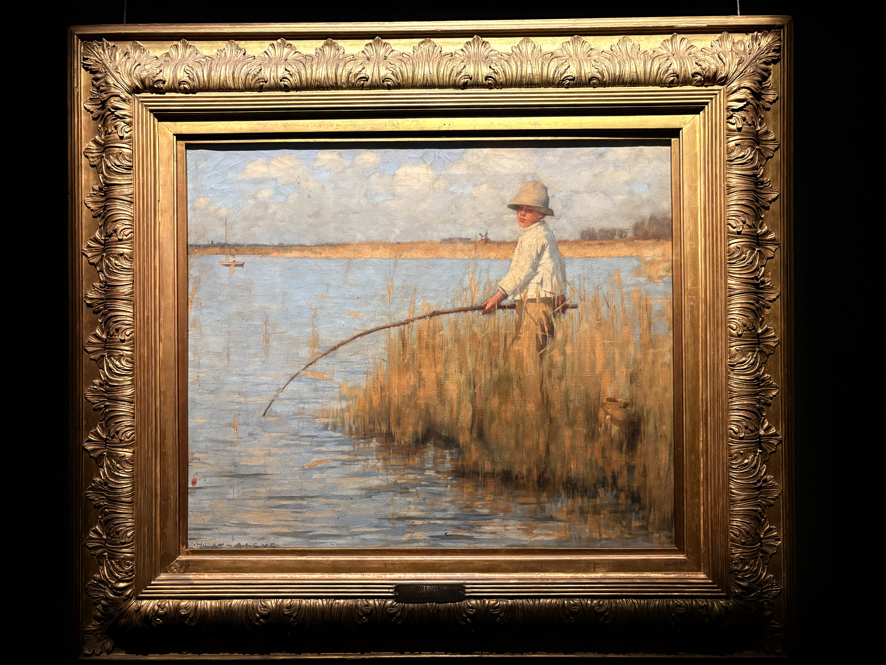

Notes & Writing
Images from experiences I've enjoyed lately, along with some things I thought would be fun to share from the process of learning/working or just going about the day.


2026.07.10
Optimism in the face of uncertainty
My favourite line learning RL. Sometimes the best words come from places you least expect them from.
2026.07.10
"How come?"
My favourite scene from one of my favourite animes, Fullmetal Alchemist Brotherhood. The scene where Envy finally dies. I find it to be maybe the most powerful scene in the series, where we're given time to reflect on the character of one of the more complex villains in the show, for it to truly set in that we are witnessing a death. How Envy is left sniveling and crying, groveling at the feet of the very people they taunted and tormented the loved ones of, trying to get them to fight till their very end, and how the one time someone is able to understand them is in their final moments, which agonizes them even more. They were envious of the very being they were meant to be better than. Human nature cannot be replicated, and no desire to be human can be fulfilled by a being that is not human. It's important to keep that in mind, especially in my domain.